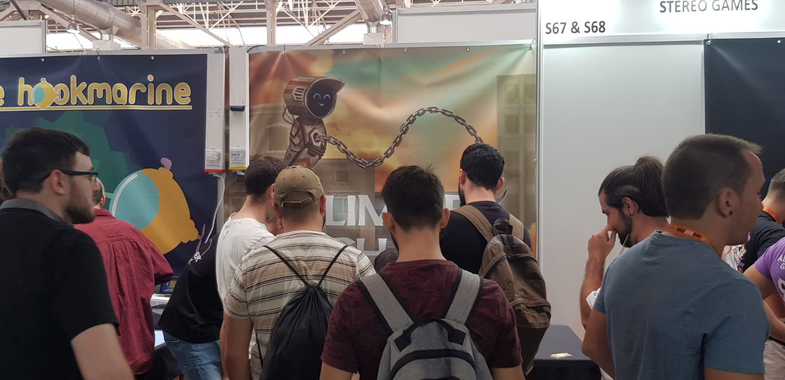

Glimmer Chain is a skill-based 2D platformer where you control a robot powered by a hook and chain. Jump and use the chain to complete levels.
Glimmer Chain is a skill-based 2D platformer where you control a robot powered by a hook and chain. Jump and use the chain to complete levels.
The project started in June 2022 and was released on April 9, 2024. It was developed using a custom engine that I built from scratch in C++, and the team consisted of three people: an artist, a composer and myself.
I had the following roles in the development:
I'm also the owner and handled all the marketing, although that wasn't part of the development process.
People often ask me: Why didn't you use an existing game engine?
Part of it is because I really enjoy it and wanted to have a finished and polished product made from scratch in my Portfolio. I wanted to face all the
challenges head-on and learn from them to be better prepared for larger projects in the future.
There are also practical reasons:
In a physics-based game, where smooth and responsive gameplay relies entirely on physics,
having full control is crucial. That's why I developed my own physics engine.
To ensure consistency across players, I've implemented a fixed physics frame rate of 120 updates per second.
Additionally, since the ranking requires a fully deterministic simulation, this approach guarantees reproducible results.
The only dynamic entity in the scene is the player, who has a rectangular collider and a rotation determined by velocity.
This necessitated oriented collision detection and resolution, though kinetic energy calculations were not required.
A fully realistic swinging simulation isn't necessary—in fact, it would hinder smooth gameplay.
Instead, the grappling mechanic is divided into two distinct components: swinging and bending.
Swinging: When the distance between the hook point and the player exceeds the rope length, all forces acting parallel to the rope
are canceled. To enable movement, a force is applied perpendicular to the rope.
Bending: This is more complex. Each physics update performs a raycast, and if a collision is detected, the hook point is adjusted
to the nearest corner. To undo bending, the system tracks the angle and rotation direction (clockwise or counterclockwise).
A threshold mechanism ensures that if the player swings past a certain limit, the hook point resets to the previous position.
The robot is the only dynamic entity, except for the particles in the ending animation.
In Glimmer Chain, you can replay your records for every level, but there's also a global
ranking where players compete for the top positions and can watch each other's runs.
Recording every play as a video would be impractical, so instead, the game stores user input and uses
it to reproduce the exact same replay every time. This requires the simulation to be completely deterministic,
meaning that physics and gameplay mechanics must always behave the same way and run at a fixed update rate.
The game uses SteamAPI to manage the leaderboards, but Steam imposes a 256-byte limit on custom leaderboard entry data.
To work around this, I developed a custom compression algorithm that converts an array of user actions into a compact buffer.
This system only fails if the compressed data still exceeds 256 bytes, but this is a rare scenario.
I find it fascinating how, within such a small space, it's possible to store enough information to
perfectly replicate a human's entire playthrough of Glimmer Chain.
As I explained before, Glimmer Chain's simulation updates at a fixed rate
of 120 times per second, while rendering remains frame rate independent.
For lower frame rates, there's not much that can be done—latency naturally increases
as the frame rate drops. However, for higher frame rates (or when the simulation runs
in slow motion for debugging purposes, such as in the video),
the rendering system uses the latest simulation data and, based on the elapsed time, predicts the player's position.
This technique creates a smoother visual effect, reducing perceived latency and giving players a more responsive experience.
The video illustrates this effect: the player moves smoothly, while the green collider,
which follows the fixed frame rate, appears to "pop" due to lack of interpolation.
Glimmer Chain was showcased at IndieDevDay 2024 in Barcelona, where I had the incredible opportunity to watch people play live. Seeing their reactions in real time was an amazing experience and a huge source of motivation for me.

A few dedicated Glimmer Chain players engaged in an intense competition for the top spots in the rankings.
After an update that improved the camera, one of them went on a streak,
breaking 92% of the world records and even posted a video of his performance on YouTube!
Code Sample: simulation.cpp
Steam Page: https://store.steampowered.com/app/2286720/Glimmer_Chain/